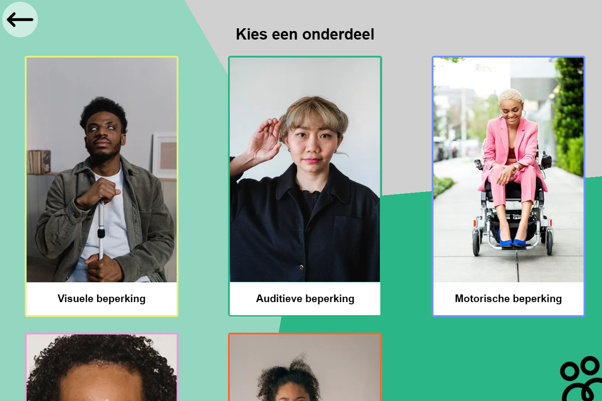
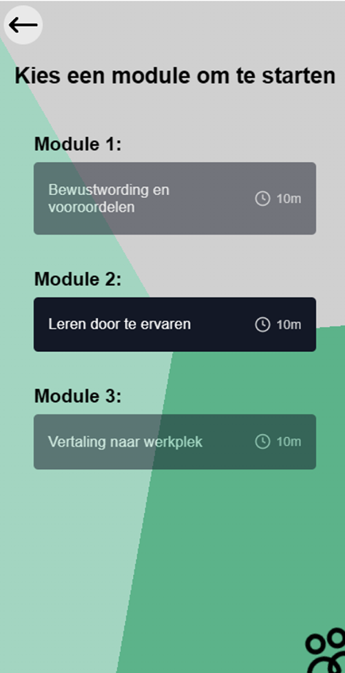
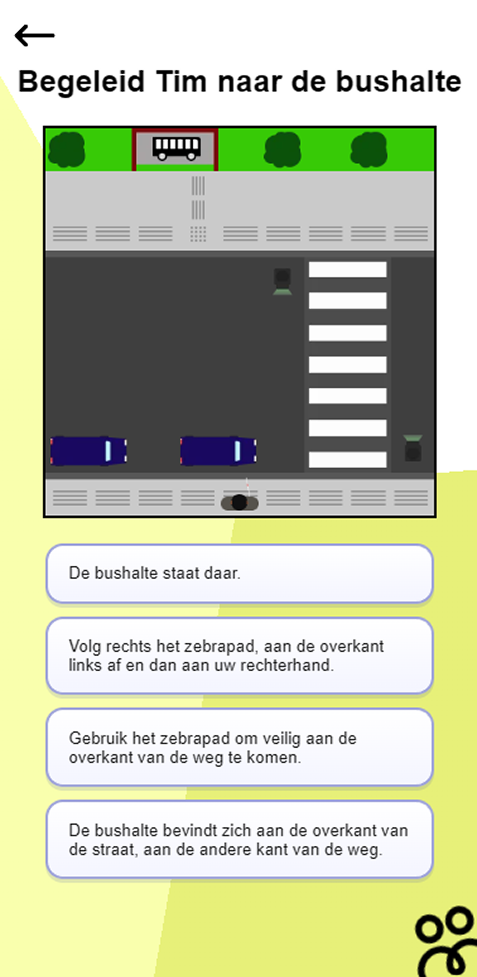
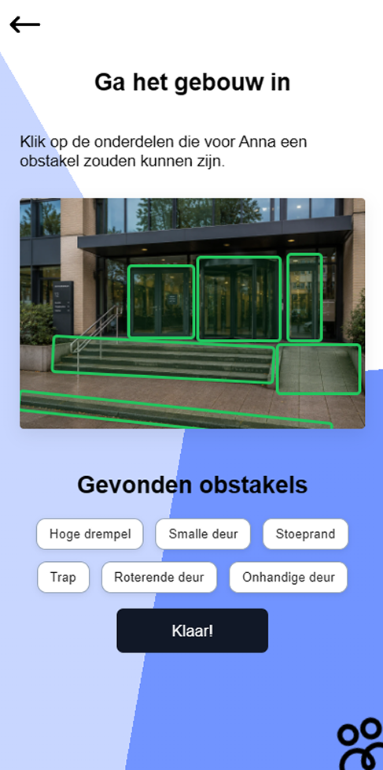

Dit project was voor een opdrachtgever. Ieder team kreeg een ander bedrijf toegewezen. Wij hadden voor ons project het bedrijf (Ink)., een social design studio die helpt om maatschappelijke problemen op te lossen door mensgericht onderzoek en ontwerp. Zij hadden een training voor ambtenaren die ze beter leert communiceren met mensen met een beperking. Het doel is om mensen met een beperking minder snel 'anders' te laten voelen. Het probleem was dat hun oude training te lang en te saai was en dat mensen vaak afhaakten. Aan ons de opdracht om een nieuwe digitale training te bouwen die interactiever en leuker is.
In onze training hebben wij 1 van de modules uitgewerkt in de training voor communicatie met mensen met een beperking. De overige modules zijn op skeleton niveau uitgewerkt in Figma. In de module zijn 5 minigames, 1 per beperking. Elke minigame begint met een introductie van een persona, vervolgens de minigame en eindigt met een quote. Ik had zelf de visuele beperking en de motorische beperking geprogrammeerd. Verder heb ik me ook samen met mijn team bezig gehouden met brainstorms, schetsen, styling, teksten etc.

Kies een module

Minigame - Visuele beperking

Minigame - Motorische beperking
Eigen reflectie: Ik vond dit een leuk project om te doen. Om een training die al bestaat op te kunnen leuken en m'n creativiteit in toe te kunnen passen is geweldig. Ik had een fijn team met duidelijke rollen en we konden goed samenwerken. Aangezien dit voor een opdrachtgever was, moesten we goed met ze communiceren wat we wilden maken en ons product regelmatig testen, wat wel goed is gegaan.